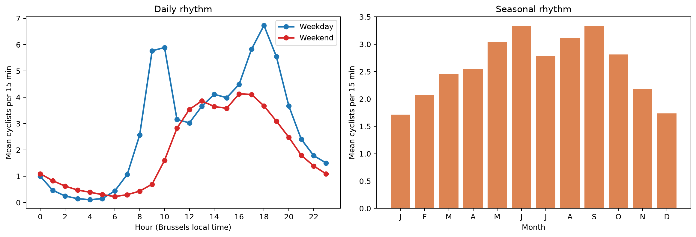
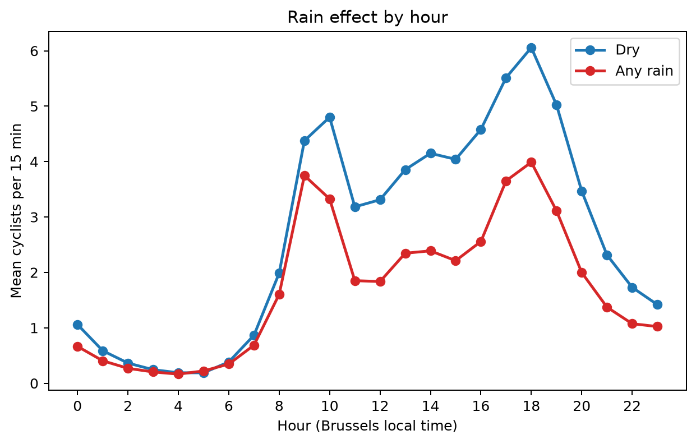
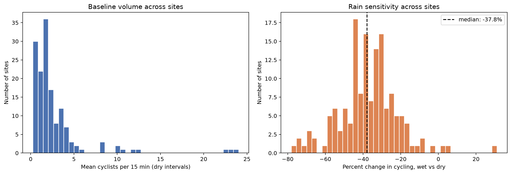
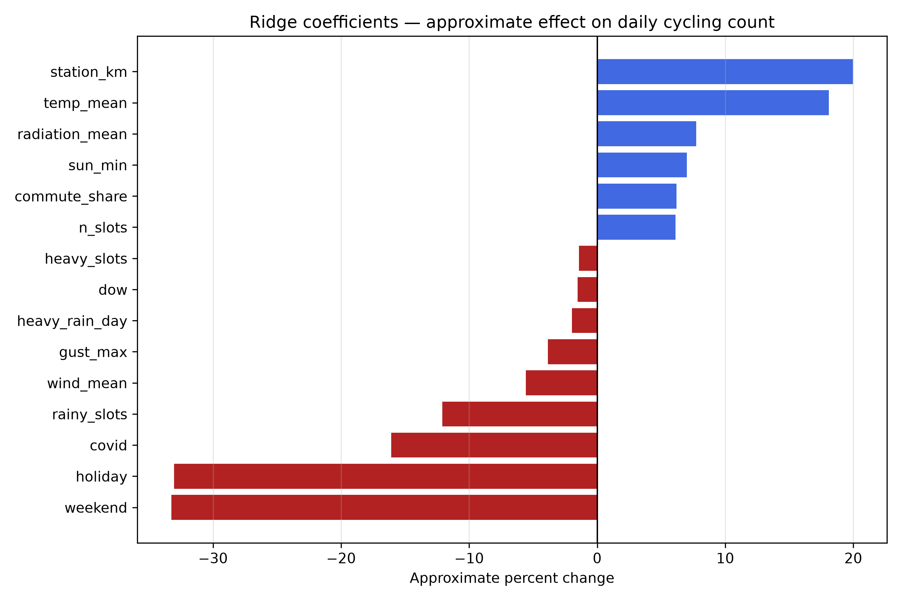
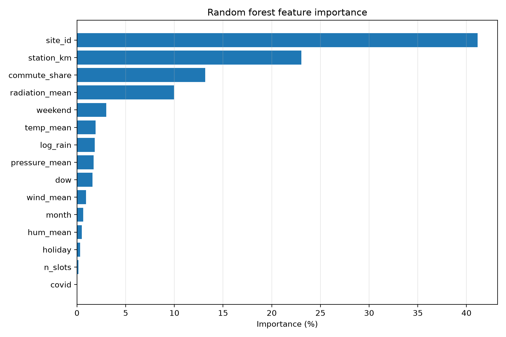
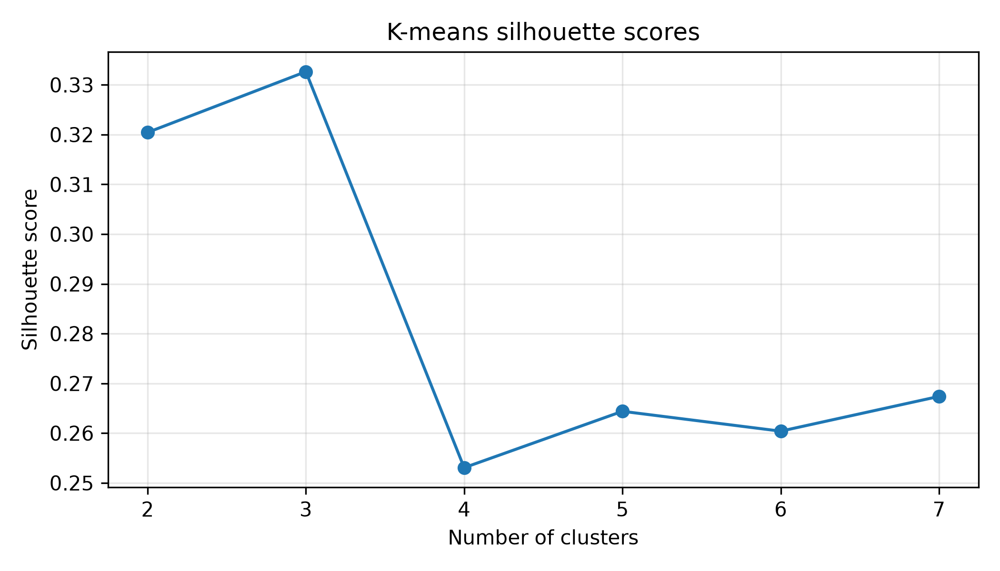
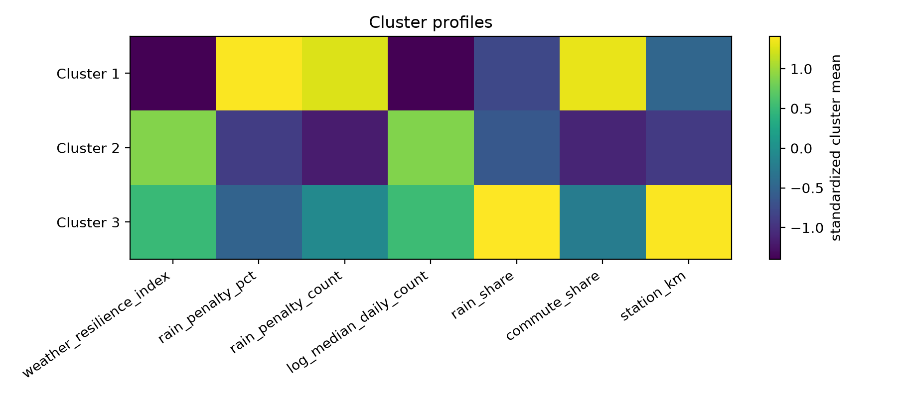
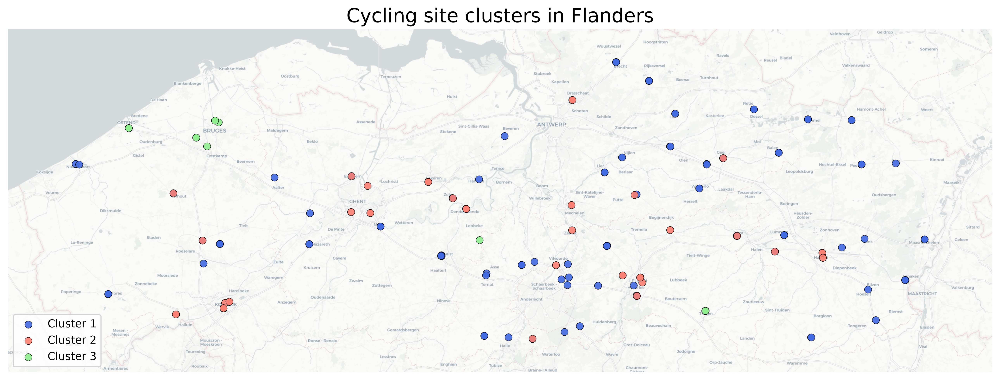

MDA project
Cycling weather resilience in Flanders
Jane Shadrina
Problem definition
AWV manages regional roads and major cycling routes in Flanders. Its automatic bicycle counters, or fietstellingen, record cycling traffic at fixed sites. The project uses those counts to estimate rain loss at the site level. The unit of analysis is a counter on a day, and the final unit of decision is a counter that can be checked on the ground.
| problem | how it is handled |
|---|---|
| rain lowers cycling volume | compare dry and rainy site-days |
| sites do not react equally | estimate site-level rain penalties |
| busy and quiet counters need separate reading | keep both count loss and percentage loss |
| many counters need grouping | cluster sites by rain response and volume |
Data pipeline

The data transformations and dependencies are shown as a DAG.
Daily panel
| quantity | value |
|---|---|
| mean daily count | 490.9 |
| any-rain site-days | 59.9% |
| heavy-rain site-days | 24.9% |
| median observed slots | 192 |
The outcome used in the supervised models is daily cyclist count, summed from the 15-minute bicycle counts for each site and Belgian local calendar day. The model target is log1p daily count.
EDA

Weekday commuting peaks and monthly seasonality.

Rainy intervals have lower mean cycling counts through most of the day.
| comparison | mean daily count |
|---|---|
| dry days | 578.1 |
| rainy days | 432.6 |
| days without heavy rain | 532.6 |
| heavy-rain days | 364.9 |
Why site-level modeling

Baseline volume and wet-vs-dry change differ across counters.
A percentage loss needs daily volume next to it. A busy counter can lose many cyclists with a moderate percentage drop. A quiet counter can have a large percentage penalty with a small absolute loss.
Ridge regression
| specification | value |
|---|---|
| target | log1p daily cyclist count |
| selected alpha | 0.1 |
| test start | 2024-11-18 |
| test R2 | 0.4502 |
| rain response | site-specific rainy-day term |
Weather, calendar, site identity, data coverage, commute share, and station distance are included.

Main ridge coefficients, converted to approximate percent changes.
Rain resilience
The ridge model predicts rainy rows twice: once as observed, and once with rain inputs set to dry conditions. The difference is the estimated rain loss in cyclists.
| site-level value | median | 95th percentile | max |
|---|---|---|---|
| rain penalty percent | 15.60% | 36.82% | 48.48% |
| rain penalty count | 32.3 | 152.4 | 822.3 |
| resilience index | 0.844 | 1.000 | 1.000 |
| site | why it appears | value |
|---|---|---|
| 64 | largest absolute loss | 822 cyclists |
| 48 | largest percentage loss | 48.5% |
| 105 | high percentage loss at quiet counter | 48.1% |
Absolute loss and percentage loss answer different planning questions, so both are kept.
Random forest
| model | RMSE log | R2 log |
|---|---|---|
| ridge regression | 0.9611 | 0.4502 |
| random forest | 0.7844 | 0.6338 |
| best RF setting | value |
|---|---|
| trees | 200 |
| max depth | 20 |
| min samples leaf | 1 |

The random forest is the prediction benchmark. Ridge is used for rain-loss estimation.
Clustering

After removing 8% outliers, k=3 has the best tested silhouette score.

Cluster profiles use site-level resilience, rain penalty, volume, rain share, commute share, and station distance.
| cluster | sites | mean rain penalty | mean resilience | description |
|---|---|---|---|---|
| 1 | 85 | 19.34% | 0.807 | rain-sensitive group |
| 2 | 40 | 5.73% | 0.943 | lowest rain penalty |
| 3 | 12 | 8.04% | 0.920 | higher rain exposure and higher volume |
Site map

Final site clusters on the Flanders map. Twelve unusual sites are left outside k-means after the outlier filter.
- cluster 1: rain-sensitive group
- cluster 2: lowest rain penalty
- cluster 3: higher rain exposure
- top absolute-loss sites include 64, 66, 48, and 139
How to use it
For AWV or municipalities, the output works as a site-level screening table before field inspection.
- start with high absolute-loss sites when the goal is to protect the largest number of cyclists
- start with high percentage-loss sites when the goal is to find routes that fail most sharply in rain
- use cluster labels to group similar counters before checking the route
| check after modeling | why |
|---|---|
| route exposure | open sections can be more rain-sensitive |
| drainage and surface quality | rain loss may reflect ride comfort |
| lighting | weather and season effects can overlap |
| construction history | outliers may come from local disruption |
| weather-station distance | matched weather may be less local |